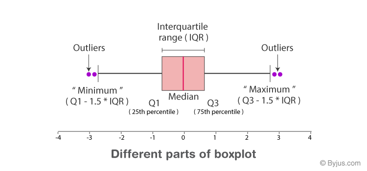

Visualització clara d'una distribució i resum estadístic de dades numèriques.
John Tukey, anys 70.

Dades numèriques
Visualització clara i entenadora. Comparacions. Identificació d'outliers.
Només tenim un resum.
Font de les dades: Titanic - Machine Learning from Disaster, (https://www.kaggle.com/competitions/titanic)
Eines: RStudio, (llenguatge R)

https://www.jaspersoft.com/articles/what-is-a-box-plot
https://www.atlassian.com/data/charts/box-plot-complete-guide
https://doc.arcgis.com/en/insights/latest/create/box-plot.htm